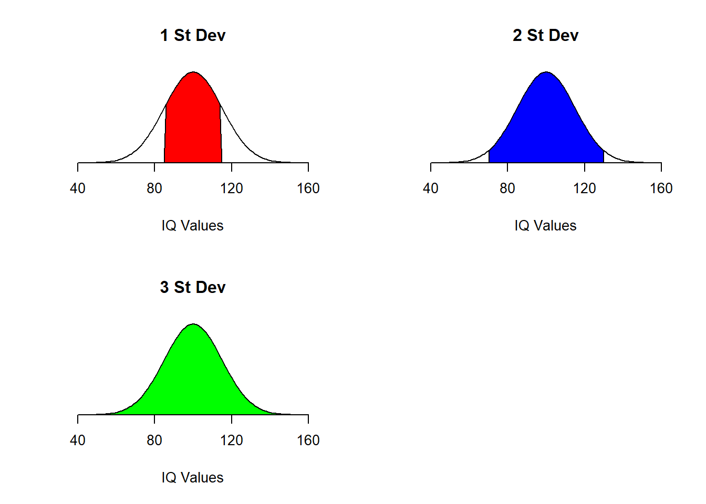

Lab 3 Dispersion
3.1 Introduction
One way to describe a vector is to report its dispersion, or spread. For example, if a poll of 100 potential Chevrolet customers were asked which model they preferred, it would make a lot of difference to a local automobile seller if the responses were fairly evenly distributed among Impala, Camaro, Traverse, and Corvette compared to results where customers selected 90% Impala with the rest distributed among the others. How tightly survey results are grouped (or scattered) is called “dispersion” and this lab explores data dispersion and the methods used to calculate that value with R.
3.2 Range
The maximum and minimum values are those at the extreme ends of a vector and the range is nothing more than the maximum minus the minimum values. For the 2016 version of the Scholastic Aptitude Test (SAT) the maximum score is 1600 and the minimum score is 400, so the range is 1600 - 400, or 1200. Even though the range is sometimes expressed as a single number, as in the case of the SAT scores, researchers normally want to know the actual endpoints rather than just the spread and those endpoints are what R reports for range.
3.2.1 Demonstration: Range
To find the range of a vector, use the range function as found in the R script below.
- Lines 2-4: These display the ranges for three different variables in the trees data frame.
- Lines 7-8: These lines are very similar to Lines 1-4 but use variables in the rock data frame.
This demonstration contains five different examples of finding the range.
3.2.2 Guided Practice: Range
Using the faithful data frame, find the range for eruptions.
3.2.3 Activity: Range
Using the cafe data frame, find the range for age. Include that answer in the deliverable document for this lab.
3.3 Quartiles
A measure that is closely related to the median is the first and third quartile. The first quartile (Q1) is the score that splits the lowest 25% of the values from the rest and the third quartile (Q3) splits the highest 25% of the values from the rest. The second quartile (Q2) is the same as the median and, normally, the term median is used rather than Q2. For example, consider this vector: 5, 7, 10, 13, 17, 19, 23. The median of this vector is 13 because three values are smaller and three are larger. The first quartile is 7, which is the median for the lower half of the values (not including 13, the median of the entire vector); or the score that splits the lowest 25% from the rest of the data. The third quartile is 19, which is the median for the upper half of the scores; or the score that splits the highest 25% from the rest of the data.
Occasionally, the word hinges appears in statistical literature. The two hinges for a vector are the medians for the lower half and the upper half of the data, but those halves also include the median for the entire vector. For the simple vector above, the lower hinge is the median of 5, 7, 10, and 13, or 8.5. The upper hinge is the median of 13, 17, 19, and 23, or 18. Quartiles and hinges usually have about the same accuracy but quartiles are more commonly used.
3.3.1 Demonstration: Quartiles
R calculates and prints the quartiles, along with several other descriptive measures, using the summary() function. This is a very important function that returns a great deal of useful information and is a staple in a data scientest’s toolbox. To find the quartiles of a vector, use the summary function found in the R script below.
- Lines 2-4: Display summary information for three different variables in the trees data frame.
- Lines 7-10: Display summary information for four different variables in the rock data frame.
This demonstration contains seven different examples of finding quartiles.
3.3.2 Guided Practice: Quartiles
Using the USJudgeRatings data frame, find the summary for WRIT.
3.3.3 Activity: Quartiles
Using the cafe data frame, find the summary for age and record the values for Q1 and Q3 in the deliverable document for this lab.
3.4 IQR (Inter-Quartile Range)
Another measure of dispersion that is occasionally used is the Inter-Quartile Range (IQR); that is, the difference between Q1 and Q3. To find the IQR for a vector, use the IQR function: IQR. For example, R reports that the difference between Q1 and Q3 for the horsepower vector in the mtcars data frame is 83.5. Since the IQR removes outliers it may sometimes provide a better indication of the data dispersion.
3.4.1 Demonstration: IQR (Inter-Quartile Range)
To find the inter-quartile range of a vector, use the IQR function found in the R script below. Note: IQR is one of the few functions in R that uses upper-case letters.
- Lines 2-4: Display inter-quartile range for three different variables in the trees data frame.
- Lines 7-10: Display inter-quartile range for four different variables in the rock data frame.
This demonstration contains seven different examples of find the inter-quartile range (IQR).
3.4.2 Guided Practice: IQR (Inter-Quartile Range)
Using the swiss data frame, find the IQR for Agriculture.
3.4.3 Activity: Inter-Quartile Range (IQR)
Using the cafe data frame, find the inter-quartile-range (IQR) for age. Include that answer in the deliverable document for this lab.
3.5 Standard Deviation
The standard deviation of a vector is a number that indicates how much variation there are in the data; or how “scattered” the data are from the mean. In general, the larger the standard deviation then the more variation there is in the data. A vector with a small standard deviation would create a sharply peaked normal distribution curve while a large standard deviation would create a flatter curve.
Once a standard deviation is calculated, then about 68.2% of the samples will lie closer to the mean than that number. To put it another way, one standard deviation explains about 68.2% of the variance from the mean. To show this concept graphically, consider the three following graphs of IQ scores.

The mean of an IQ distribution is 100 and one standard deviation is 15. The shaded area under the first curve, in red, includes about 68.2% of all IQ scores. In the same way, two standard deviations from the mean would include about 95.4% of the data points and is illustrated in blue in the second image; and three standard deviations would include more than 99.7% of the data points and is illustrated in green in the third image.
As one last example, imagine several classes with a total of 500 students where the professors administered an examination worth 100 points. If the mean score for that examination was 80 and the standard deviation was 5, then the professors would know that the scores were fairly tightly grouped (341 scores of the 500 (68.2%) were between 75-85, within 5 points of the mean), and this would probably be good news. On the other hand, if the mean score was 60 and the standard deviation was 15, then the scores were “all over the place” (more precisely, 341 scores of the 500 were between 45-75), and that may mean that the professors would have to re-think how the lesson was taught or maybe that the examination itself was flawed.
It is difficult to categorically state whether a specific standard deviation is good or bad; it is simply a measure of how concentrated the data are around the mean. For something like a manufacturing process where the required tolerance for the parts being produced is tight then the standard deviation for the weights of random samples pulled off of the line must be very small; that is, the parts must be as nearly identical as possible. However, in another context, the standard deviation may be quite large. Imagine measuring the time it takes a group of high school students to run 100 yards. Some would be very fast but others would be much slower and the standard deviation for that data would likely be large.
3.5.1 Demonstration: Standard Deviation
To find the standard deviation of a vector, use the sd function as found in the R script below.
- Lines 2-4: Display standard deviation for three different variables in the trees data frame.
- Lines 7-10: Display standard deviation for four different variables in the rock data frame.
This demonstration contains seven different examples of finding the standard deviation.
In the results, notice that the tree girth has a standard deviation of about 3.14 inches while the range was 8.3-20.6 inches (the range function is found in an activity earlier in this tutorial). While that range is fairly large, the standard deviation indicates that the girths of most of the trees were within about 6 inches of each other, so the trees were all about the same size. This is an example of how the standard deviation can provide information to help interpret the range.
3.5.2 Guided Practice: Standard Deviation
Using the stackloss data frame, find the standard deviation for Air.Flow.
3.5.3 Activity: Standard Deviation
Using the cafe data frame, find the standard deviation for age. Include the answer in the deliverable document for this lab.
3.6 Deliverable
Complete the activities in this lab and consolidate the responses into a single document. Name the document with your name and “Lab 3,” like “George Self Lab 3” and submit that document for grade.